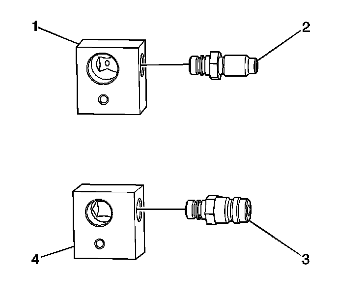
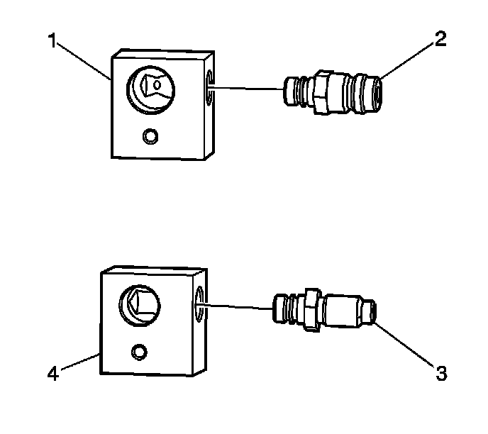
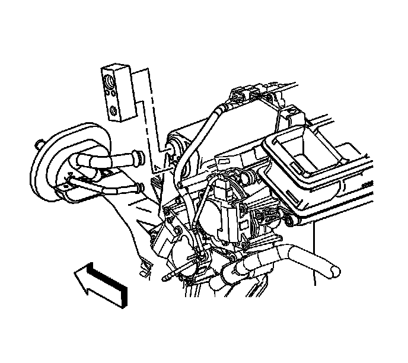
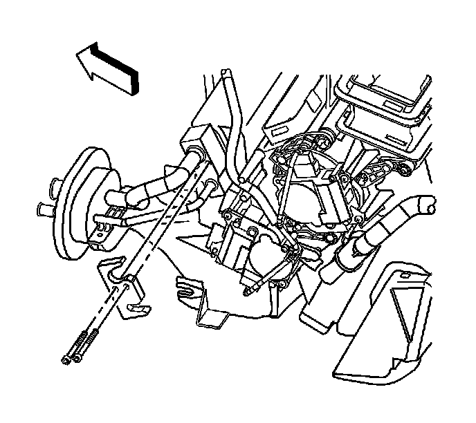
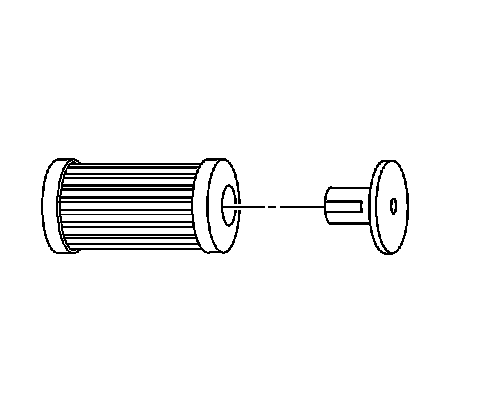
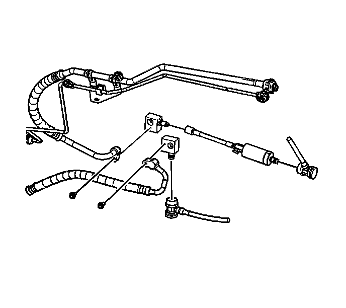
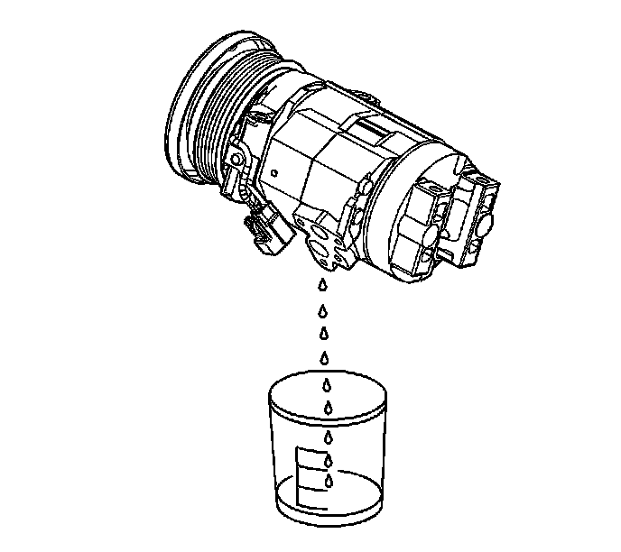

Flushing (w/o Auxiliary A/C)
Flushing (w/o Auxiliary A/C)
Tools Required
* J 41447 R-134A - A/C Tracer Dye - Box of 24
* J 42220 Universal 12V Leak Detection Lamp
* J 43600 ACR 2000 Air Conditioning Service Center
* J 45268 A/C Flush Adapter Kit
Important: Flushing is not intended to remove metal from the A/C system.
Flushing is intended to remove the following:
* Contaminated polyalkylene glycol (PAG) oil
* Desiccant, following a desiccant bag failure
* Overcharge of PAG oil
* Refrigerant contamination
Forward Flushing Setup

Important: Forward flow refrigerant flushing is recommended for contaminated refrigerant or PAG oil.
Important: Inspect and lubricate the J 45268 fitting O-rings. Refer to O-Ring Replacement (Service and Repair) .
1. Install the J 45268-7 (2) onto the suction line adapter block J 45268-13 (1).
2. Install the J 45268-8 (3) onto the discharge line adapter block J 45268-12 (4).
Reverse Flushing Setup

Important: Reverse flow refrigerant flush is recommended for desiccant bag failure. Replace the condenser/receiver dehydrator assembly when the A/C flush is complete and perform the following procedure:
Important: Inspect and lubricate the J 45268 fitting O-rings. Refer to O-Ring Replacement (Service and Repair) .
1. Install the J 45268-8 (2) onto the suction line adapter block J 45268-13 (1).
2. Install the J 45268-7 (3) onto the discharge line adapter block J 45268-12 (4).
Flush Procedure
Important: Warmer engine or ambient temperatures decreases the refrigerant recovery time during the A/C flush procedure.
1. Recover the refrigerant. Refer to Refrigerant Recovery and Recharging (Refrigerant Recovery and Recharging) .

2. Remove the thermal expansion valve (TXV). Refer to Thermal Expansion Valve Replacement (Service and Repair) .
3. Install new O-rings onto the evaporator core and A/C lines. Refer to O-Ring Replacement (Service and Repair) .
4. Install the A/C lines into J 45268-110.
5. Install J 45268-110 onto the evaporator core.
6. Install the TXV line bracket.

7. Install TXV mounting bolts.
Tighten the bolts to 3.5 N.m (31 lb in).
8. Remove the A/C compressor. Refer to Compressor Replacement (LH2 - Standard Cooling) (Service and Repair)Compressor Replacement (LY7 - Gas, 6 Cylinder, 3.6L, SFI, V6) (Service and Repair)Compressor Replacement (LH2 - Heavy Duty Cooling) (Service and Repair) .

Important: The filter inside J 45268-1 is serviceable. Remove and discard the check valve from the filter.
9. Service the filter with ACDelco P/N GF 470, before each flush.
Important: Install new O-rings onto the A/C discharge and suction lines. Refer to O-Ring Replacement (Service and Repair) .
10. Install the J 45268-13 to the A/C suction line.
11. Install the J 45268-12 to the A/C discharge line.

12. Connect the J 45268-1 flush filter to the J 45268-7 flush fitting.
13. Connect the blue hose from the J 43600 to J 45268-1 flush filter adapter.
14. Connect the red hose from the J 43600 to J 45268-8 flush fitting.
Important: Close the valve on the external refrigerant tank, before starting the flush process.
15. Flush the A/C system. Follow the instructions supplied with the J 43600 .
16. Disconnect the red hose from the J 43600 to J 45268-8 flush fitting.
17. Disconnect the blue hose from the J 43600 to J 45268-1 flush filter adapter.
18. Disconnect the J 45268-1 flush filter from the J 45268-7 flush fitting.
19. Remove the J 45268-12 from the A/C discharge line.
20. Remove the J 45268-13 from the A/C suction line.

Important: Flushing will remove all the PAG oil from the A/C system.
The A/C system must be replenished with the correct amount of PAG oil.
21. If you will reinstall the removed A/C compressor, perform the following procedure:
1. Drain the PAG oil from the A/C compressor. Rotate the compressor input shaft to assist in draining the PAG oil from the compressor.
Important: Rotating the compressor hub assembly when adding PAG oil to the A/C compressor suction port will draw the PAG oil into the crankcase chamber and prevent overflow .
2. Add the total system capacity of PAG oil into the suction port of the A/C compressor while slowly rotating the A/C compressor hub assembly. Refer to Refrigerant System Capacities ([1][2]Capacity Specifications) .
Important: Flushing will remove the fluorescent leak detection dye from the A/C system.
3. Add one bottle of J 41447 directly into the suction port of the A/C compressor while slowly rotating the A/C compressor hub assembly.
Important: A new service compressor is shipped with a full charge of PAG oil. Refer to Refrigerant System Capacities ([1][2]Capacity Specifications) .
22. Install the A/C compressor. Refer to Compressor Replacement (LH2 - Standard Cooling) (Service and Repair)Compressor Replacement (LY7 - Gas, 6 Cylinder, 3.6L, SFI, V6) (Service and Repair)Compressor Replacement (LH2 - Heavy Duty Cooling) (Service and Repair) .
23. Remove the TXV mounting bolts.
24. Remove the TXV line bracket.
25. Remove J 45268-110 from the evaporator core.
26. Remove the A/C lines from J 45268-110.
27. Inspect the TXV for debris. Clean or replace as needed.
28. Replace the desiccant bag. Refer to Air Conditioning Refrigerant Desiccant Replacement (Service and Repair) .
29. Evacuate and recharge the A/C system. Refer to Refrigerant Recovery and Recharging (Refrigerant Recovery and Recharging) .
30. Leak test the fittings using J 42220 .